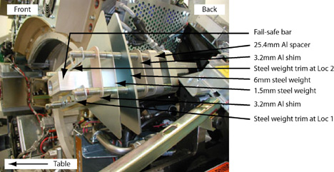

Illustration 1: Balance weight stacking order

The order from back to front of the specific balance weights is shown in Illustration 1. Location angle 107 is shown (on the side of the detector), but also applies to the 180-degree location above the detector. Mandatory Weight Stack Positioning Order is shown:
The balance program will determine the number of each specific weight.
The physical order from front to back is critical and cannot be altered.
A quantity of 0 (zero) is a valid number for specific weights.
Each specific weight is defined by its base metal, generic name, location angle and thickness in mm.
Example:
Base Metal: Aluminum
Generic Name: SPACER
Location Angle: 107 DEG
Thickness in mm: 25.4MM
| NOTE: | You may not have all plate types installed on your Gantry depending on what is needed to balance the Gantry. |